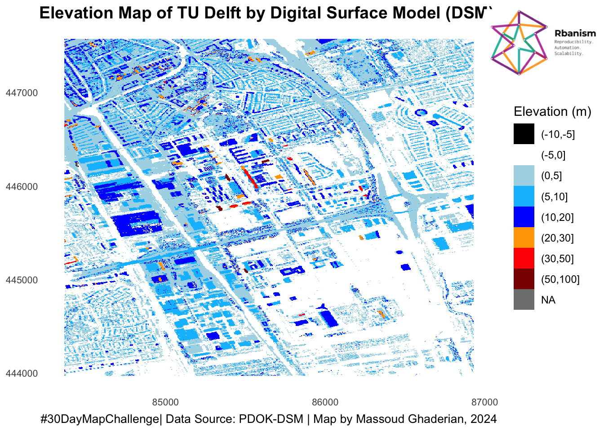

# Define the packages to be used
packages <- c("tidyverse", "sf", "httr2",
"raster", "rasterVis", "magick",
"magrittr","grid")
# Function to check if packages are installed and load them
load_packages <- function(pkgs) {
# Check for missing packages
missing_pkgs <- pkgs[!(pkgs %in% installed.packages()[, "Package"])]
# Install missing packages
if (length(missing_pkgs)) {
install.packages(missing_pkgs)
}
# Load all packages
lapply(pkgs, library, character.only = TRUE)
}
load_packages(packages)#30DMC_6Nov_Raster
6 November. Raster.
“A map using raster data. Rasters are everywhere, but today’s focus is purely on grids and pixels—satellite imagery, heatmaps, or any continuous surface data.”
1. Package Installation and Loading
2. Load the DSM raster and download Rbanism logo
dsm <- raster("DSM5m.tif")
rbanism_logo <- image_read('https://rbanism.org/assets/imgs/about/vi_l.jpg')3. Map raster
# Convert DSM raster to a data frame for ggplot
dsm_df <- as.data.frame(dsm, xy = TRUE)
colnames(dsm_df) <- c("x", "y", "elevation")
# Define custom color palette and bins
custom_colors <- c("black","white", "lightblue","deepskyblue","blue",
"orange", "red", "darkred")
custom_bins <- c(100,50,30,20,10,5,0,-5,-10)
dsm_df <- dsm_df %>%
mutate(fct_elevation_cb = cut(`elevation`, breaks = custom_bins))
levels(dsm_df$fct_elevation_cb)[1] "(-10,-5]" "(-5,0]" "(0,5]" "(5,10]" "(10,20]" "(20,30]" "(30,50]"
[8] "(50,100]"#plotting by ggplot
ggplot(dsm_df, aes(x = x, y = y, fill = fct_elevation_cb)) +
scale_fill_manual(values = custom_colors) +
geom_raster() +
theme_minimal() +
labs( title = "Elevation Map of TU Delft by Digital Surface Model (DSM) ",
fill = "Elevation (m)",
x = NULL, # Remove x-axis title
y = NULL, # Remove y-axis title
caption = "#30DayMapChallenge| Data Source: PDOK-DSM | Map by Massoud Ghaderian, 2024")+
theme(
legend.position = "right", # Move legend below the plot
axis.text = element_text(size = 8), # Customize axis text
panel.grid = element_blank(), # Remove grid lines
plot.title = element_text(face = "bold", size = 14, hjust = 0.5, margin = margin(b = 0.5)), # Center title
plot.caption = element_text(hjust = 0.5, size = 10, color = "black"), # Center caption
plot.margin = margin(t = 5, r = 5, b = 5, l = 5) # Adjust margins
)
grid.raster(rbanism_logo, x = 0.9, y=0.9, # x and y determine the position of the logo (top right)
width = unit(100, "points")) # width determines the size of the logo
# Save the plot as a PNG file
ggsave("TUDelftDSM.png", width = 8 , height =8, dpi = 600)